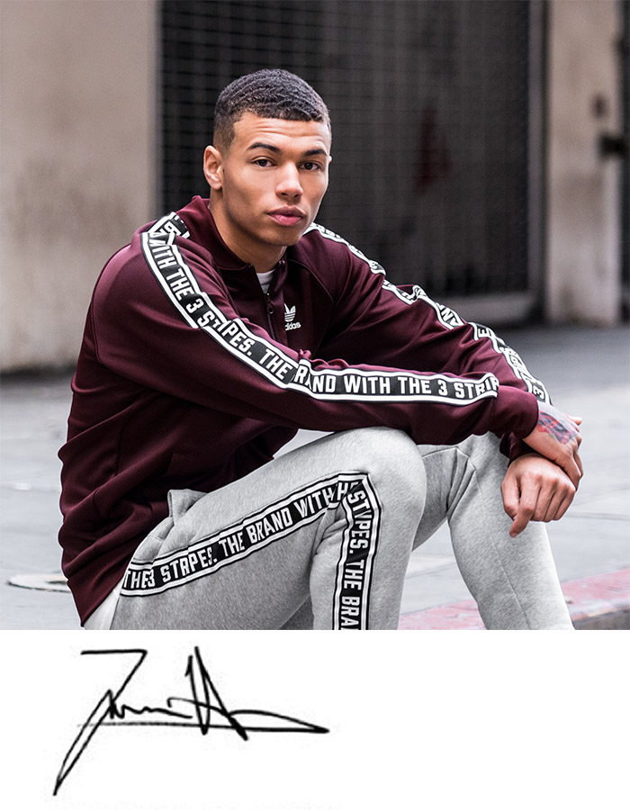

Introducing Sadiqur
London, UK Posted yesterday
"FIVE A SIDE IS ABOUT SPEED AND TEAMWORK."

My name is Sadiqur and my team just won the first five a side tourmanent at The Base in LA. It’s an awesome place to play but also train and wind down after with music and other events like dancing and freestyle.
How I look when I play is almost as important of the style I play. When I feel I’m looking good then it helps me feel like I can own the ball and the court. My favourite court shoes are Gazelles: they’re a good weight with solid grip and I love the retro design.
Fave boots: New Copa Tango 17.2

Off court I prefer shoes like the NMD, especially primeknit. I'm always keeping an eye on the release calendar for new drops. I can't wait to get my hands on the EQT Advances next week.
I probably spend more time thinking about how I look off court rather than on but all my time goes to training - either with my team mates or doing weights and stuff at the gym. Speed and power makes such a big difference on the pitch.
"I CAN'T TRAIN WITHOUT MY TUNES".
I need to focus when I'm training so good music really helps me do that. Kendrick Lamar, A$AP Rocky and schoolboy Q have been getting a lot of listens lately.
"MY PHILOSOPHY? LIVE LIFE TO THE FULLEST"
I play and train hard and while I like to stay healthy I do love some good food. I avoid sugary soda and alcohol but I can resist a good sandwich or burger with some chips, especially after a hard game! You need rewards for all that hard work.